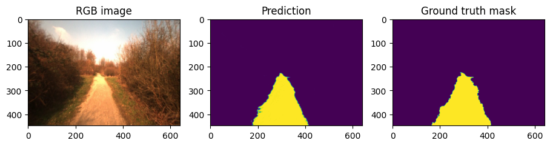
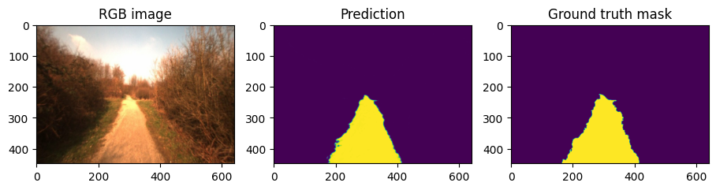

Load model¶
from datetime import datetime
import matplotlib.pyplot as plt
import numpy as np
import tensorflow as tf
import segmentation_models as sm
from visualise import show_two, show
from dataset import load_dataset, split_dataset_paths
WARNING:root:Limited tf.compat.v2.summary API due to missing TensorBoard installation.
WARNING:root:Limited tf.compat.v2.summary API due to missing TensorBoard installation.
WARNING:root:Limited tf.compat.v2.summary API due to missing TensorBoard installation.
WARNING:root:Limited tf.summary API due to missing TensorBoard installation.
Segmentation Models: using `tf.keras` framework.
Prepare dataset¶
IMAGE_SIZE = [448, 640]
GCS_PATTERN = 'gs://padnet-data/freiburg/tfr/*.tfr'
paths = tf.io.gfile.glob(GCS_PATTERN)
PARALLEL_OPS = None
TRAIN_RATIO = 0.7
VALIDATION_RATIO = 0.15
train_paths, validate_paths, test_paths = split_dataset_paths(paths, TRAIN_RATIO, VALIDATION_RATIO)
print(f"Found {len(paths)} tfrs. Splitting into {len(train_paths)} training, {len(validate_paths)} validation, and {len(test_paths)} test tfrs")
Found 230 tfrs. Splitting into 161 training, 34 validation, and 35 test tfrs
Load dataset¶
test_dataset = load_dataset(test_paths, IMAGE_SIZE, PARALLEL_OPS)
test_lst = list(test_dataset)
NBRO_TEST_CASES = 5
test_sample_rgbs, test_sample_gts = zip(*test_lst[:NBRO_TEST_CASES])
Load model¶
model = tf.keras.models.load_model('./test_save.h5', compile=False)
Predict¶
predictions = model(np.asarray(test_sample_rgbs))
for test_sample_rgb, prediction, test_sample_gt in zip(test_sample_rgbs, predictions, test_sample_gts):
show({
"RGB image": test_sample_rgb,
"Prediction": prediction,
"Ground truth mask": test_sample_gt
})


 
